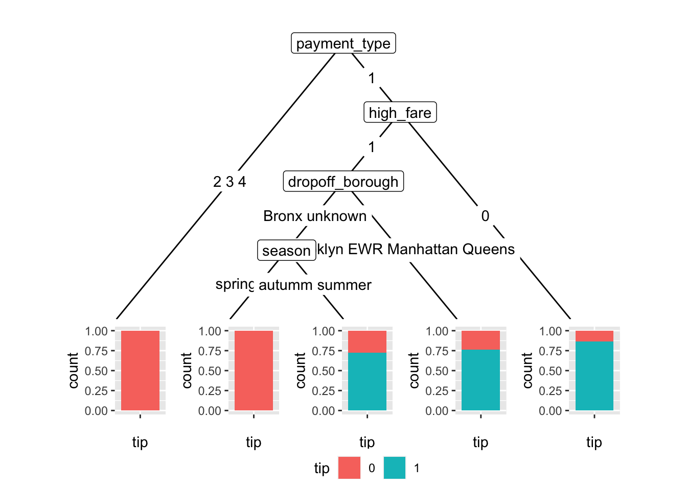

Chapter 4 [Model 2: Decision Tree]
4.1 Decision Tree Pruning
For my second model, I decided to a decision tree model so I can see which features the model decides to split on. I’d like to compare the features in this model with the features that OneR ranked as important, and see if they line up. In addition, I’d like to see a more granular breakdown of the distributions of tip conditioned on different predictors.
First, I want to split into test and train.
 For the same reasons as in model1, I decided to choose passenger_count, VendorID, RatecodeID, dropoff_borough, season, and high_fare as my predictors for my decision tree. However, this time I would also like to see if payment type has any influence on this as well. The different payment types are cash, credit, no charge, disputed, unknown, and void. These are categorical variables with easily interpretable meanings, so I decided to keep these as my predictors.
For the same reasons as in model1, I decided to choose passenger_count, VendorID, RatecodeID, dropoff_borough, season, and high_fare as my predictors for my decision tree. However, this time I would also like to see if payment type has any influence on this as well. The different payment types are cash, credit, no charge, disputed, unknown, and void. These are categorical variables with easily interpretable meanings, so I decided to keep these as my predictors.
This is our initial tree with maximum depth (CP=0), which is the maximum fitting we can do (with no pruning). As we can tell, it’s not very interpretable, as it splits on many variables and is very hard to understand. Before we try some pruning, let’s look at the accuracy of this model.
## [1] "Test sensitivity and specificity:"## [1] 0.6697248## [1] 0.9919225The sensitivity is not great, but the specificity is pretty good. order to create a more useful model for us, we can turn to pruning to cut down on the predictors the tree tries to split on. To do this, we can take a look at the CP table, which will give us information as to the CP value that gives us the minimal error.
## [1] 0.001529052It seems that the optimal cp value is 0.001529052, which is higher than our original cp=0. Hopefully, once we raise the cp value the resulting tree will be smaller and easier to interpret.

This is really interesting- and much easier to understand! Now that we include payment type, we see that credit card rides are overwhelmingly tipped oer 15%. This confirms what we discovered in the OneR model. On the other side, it seems that “cash, no charge, or dispute” was overwhelmingly tipped under 15%. If we keep going on the right side branch, high_fare is quite important. We also see that the dropoff_borough is not as important of a branching factor as in the OneR model. The OneR grouped together Bronx, EWR, Queens, and unknown into one group, and Brooklyn, Manhattan into another, whereas our “optimal” decision tree has decided this as a later branching factor with a different combination.
Finally, let’s look at the accuracy, specificity, and sensitivity of the pruned tree as compared to the original unpruned tree.
## [1] "Overall accuracy:"## [1] 0.8837209## [1] "Test sensitivity and specificity:"## [1] 0.6697248## [1] 0.9983845The sensitivity and specificity for the test set on the pruned tree is very slightly better than that of the unpruned tree. However, it is important to note that the sensitivity (true positive rate) is still quite low, while the specificity (true negative rate) is quite high. We don’t gain that much from pruning.
4.2 ROC “Curve”
Let’s get another view on this using an ROC curve.
## geom_label_repel: parse = FALSE, box.padding = 0.25, label.padding = 0.25, point.padding = 1e-06, label.r = 0.15, label.size = 0.25, min.segment.length = 0.5, arrow = NULL, na.rm = FALSE, force = 1, force_pull = 1, max.time = 0.5, max.iter = 10000, max.overlaps = 10, nudge_x = 0, nudge_y = 0, xlim = c(NA, NA), ylim = c(NA, NA), direction = both, seed = NA, verbose = FALSE
## stat_identity: na.rm = FALSE
## position_identityThis is a very interesting ROC curve. This seems to indicate that the predictions of the model that I used are just predicting 1 (tipped over 15%) with a probability of 67% for almost every row. The 67% reflects the proportion of the total dataset that tipped over 15%, so it seems that the constructed model isn’t very useful.